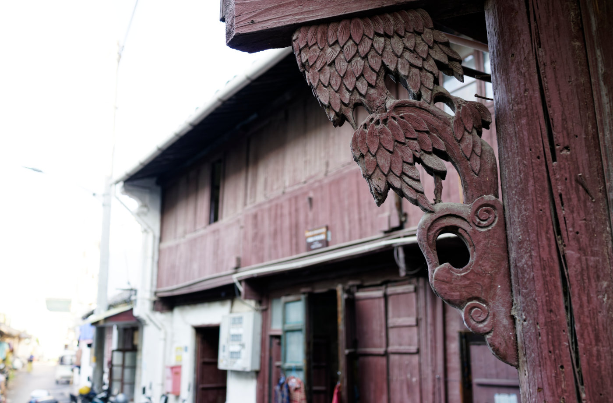
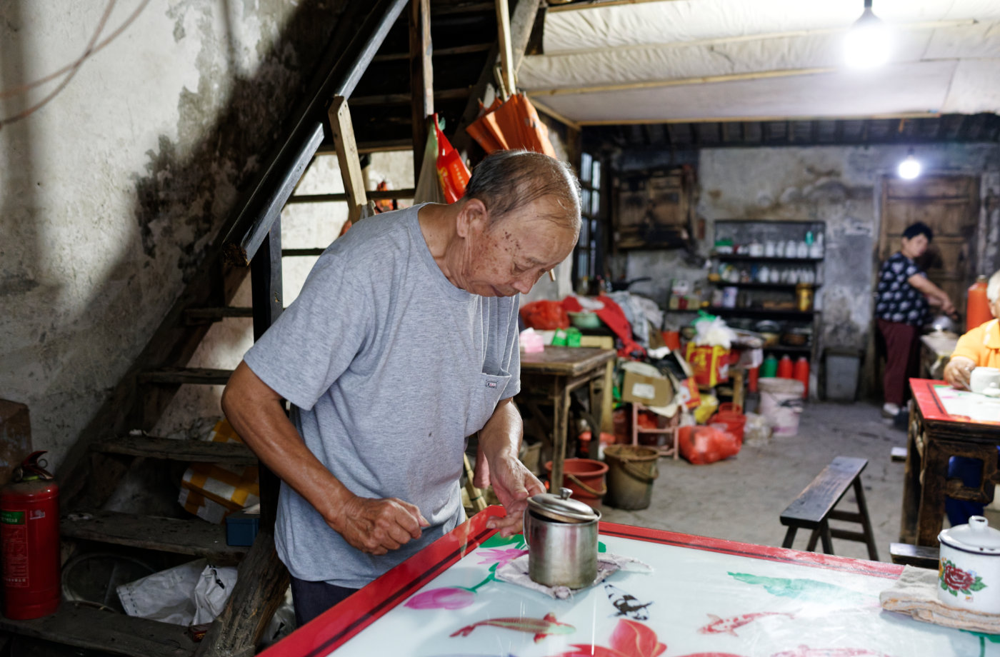
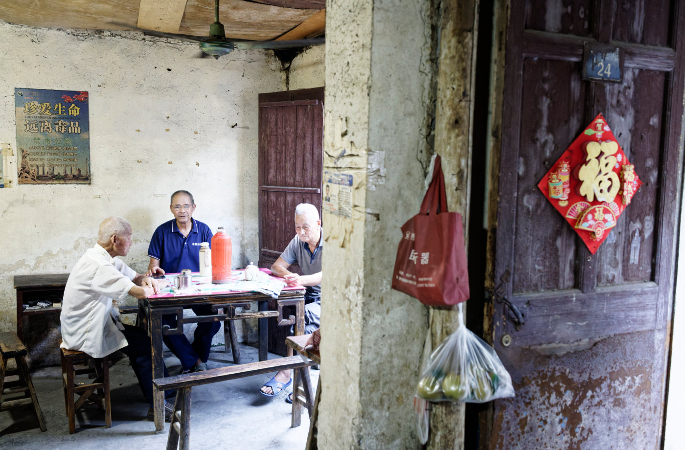
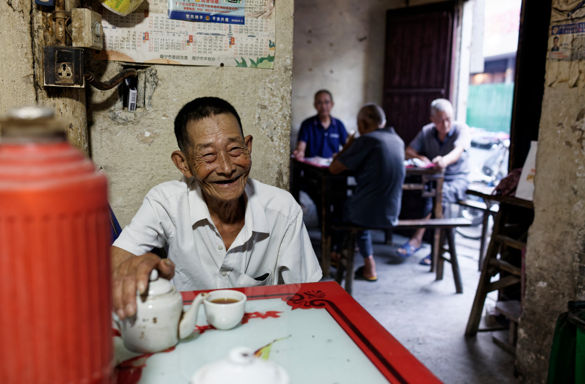
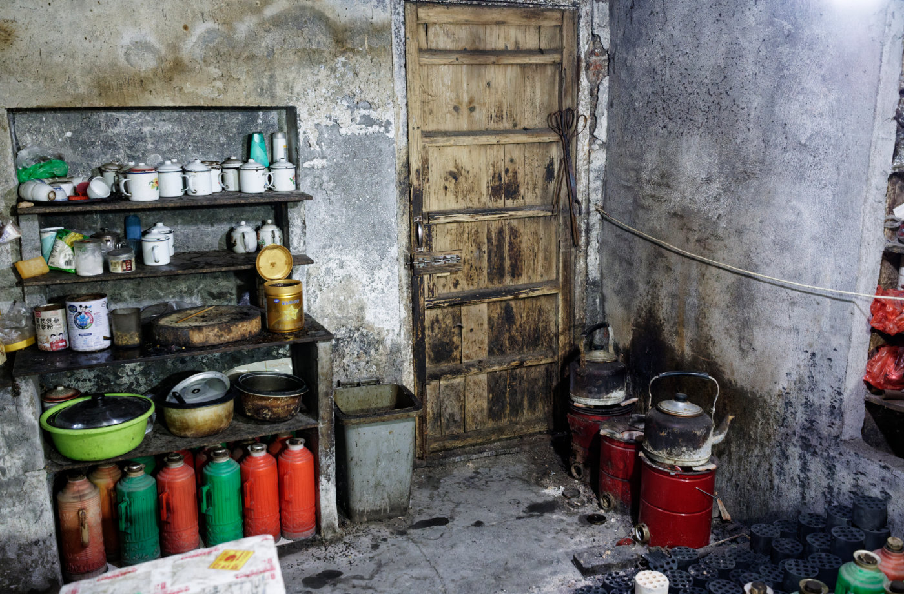
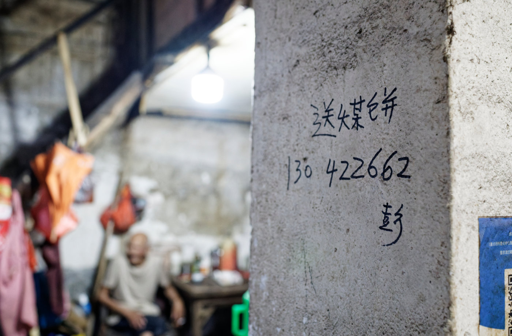
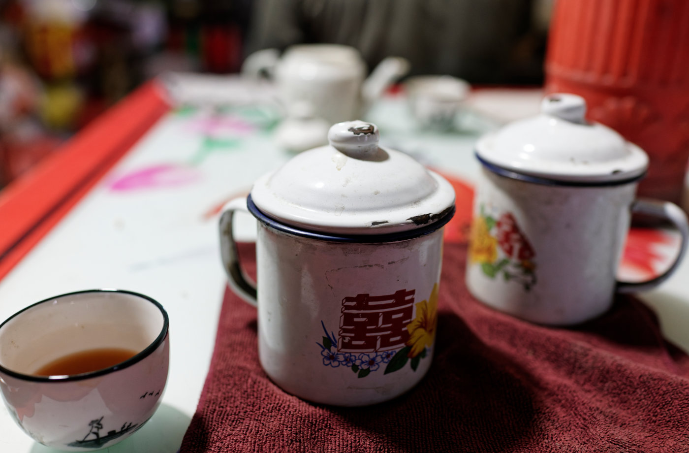
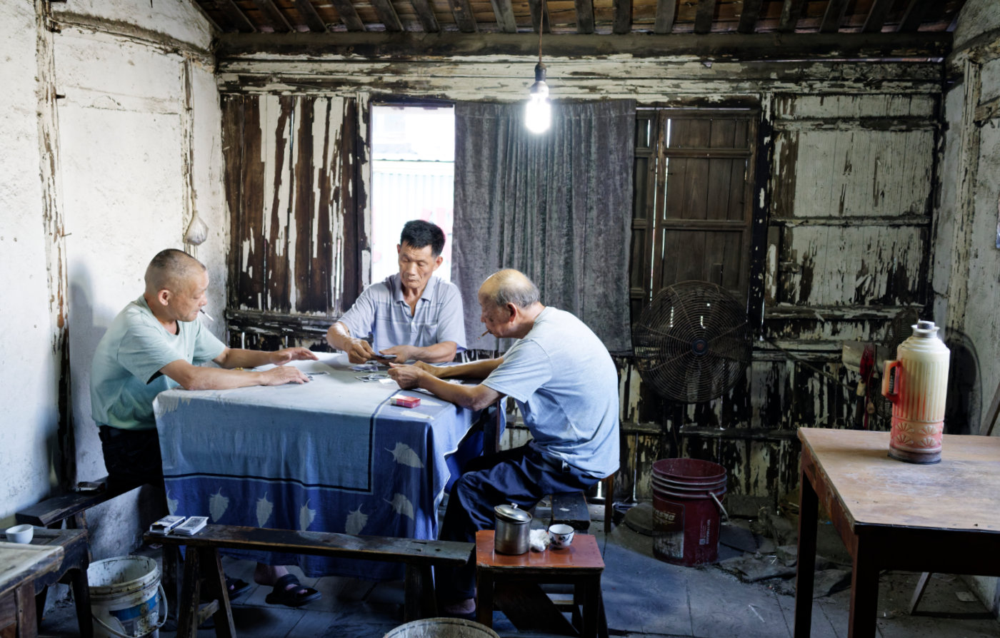

这次外拍活动第二站：海宁丰士村老茶馆
之前拍过荻港的老茶馆，相比之下，丰士村这里少了一些整理后的秩序感，更显得自然和朴素。
茶馆藏在村子里的巷子中，门口没有特别醒目的招牌，木门和门框上的木雕已经被岁月磨得发暗。里面的光线很简单，几盏白炽灯挂在低矮的屋顶下，墙面斑驳，桌椅也都留下了长期使用的痕迹。
这里不像一个专门供人参观的旧场景，它仍然是附近老人喝茶、聊天和消磨时间的地方。几位老人围坐在桌边，手边放着茶杯、暖水瓶和搪瓷缸，偶尔有人起身添水，屋子里一直保持着一种缓慢而自然的节奏。
我很喜欢这些没有被整理过的细节：墙上的日历和手写电话号码，角落里一排排不同颜色的暖水瓶，木架上堆放的杯子和杂物，还有桌面上已经褪色的花纹。它们不是什么特别精致的物件，却把茶馆的日常保存了下来。
拍摄时尽量没有打扰茶客，只是在旁边慢慢观察。有人对着镜头笑，有人低头喝茶，也有人在里间围桌打牌。对他们来说，这里只是每天都会来的地方；而对我来说，这些普通的瞬间，记录了一种正在慢慢远去的生活方式。
相比荻港的老茶馆，丰士村这里显得更朴素，也更接近当地人的日常。茶馆究竟还能维持多久不得而知，但在这次经过的时候，它仍然安静地开着门，几张茶桌旁也仍然有人坐着。








